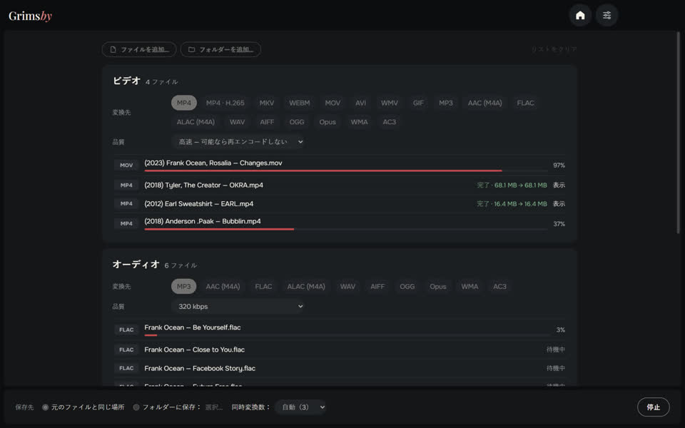
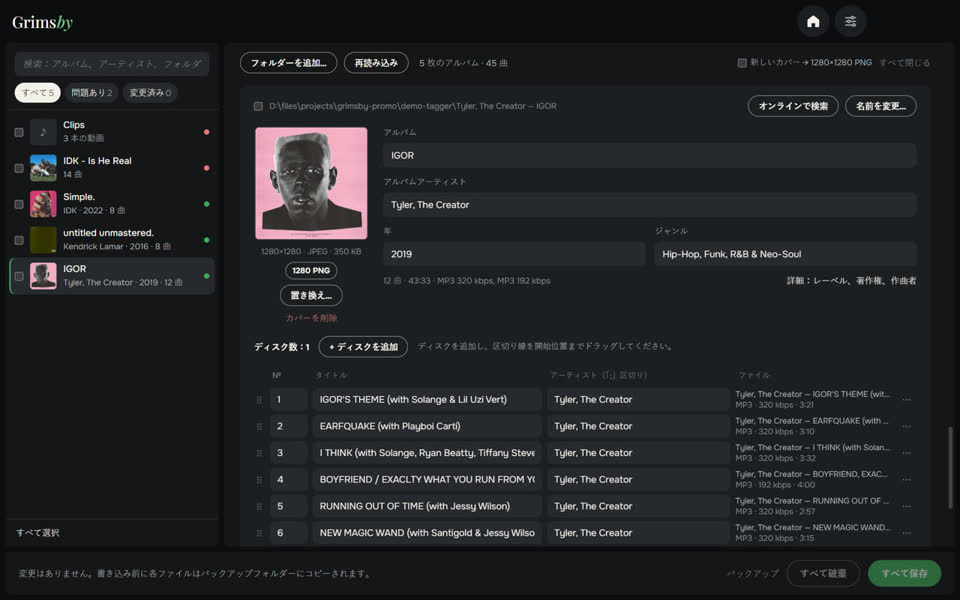

Grimsby Player
ダウンロードした音楽と MV のためのオフラインプレーヤー
音楽をダウンロードして集める人のためのプレーヤー。音楽フォルダーを指定するだけで、コレクションがストリーミングサービスのようなライブラリになります。年ごとのアルバム、アーティストページ、アルバムの横に並ぶ MV。すべてはあなたのパソコンの中に。アカウントもサブスクも広告もありません。
- 発売年ごとのアルバムと、アルバム・動画・ライブ・客演をまとめたアーティストページ
- MV、ライブ、アルバム映像を自動でアルバムにひも付け
- ギャップレス再生、音量の自動調整、10 バンドイコライザー
- 自動で組み上がるスマートなラジオ風プレイリスト
- 再生とコレクションの統計、アルバムの統計、年間まとめ
- 変換、重複ファイル検索、ライブラリのチェック機能を内蔵

Grimsby Converter
動画・音声・写真・文書をオフラインで変換
あなたのパソコンの中で動くファイル変換ツール。ファイルやフォルダーをまとめてドラッグすると自動でグループ分けされ、グループごとに形式と品質を選んで、ボタンひとつで一括変換。ファイルはどこにもアップロードされません。
- 動画・音声・写真・文書・表計算・プレゼンをひとつの画面で
- フォルダーごとまとめて追加、自動でグループ分け
- 高速モード：MOV から MP4 へ数秒で、画質の劣化なし
- 数十の形式に対応：DSD 音源や M4B オーディオブックから、Photoshop の PSD、Keynote まで
- 元のファイルはそのまま。サイズ制限もウォーターマークもなし
- 複数ファイルを同時に変換。プロセッサーの性能に合わせて並列処理


Grimsby Tagger
タグ一括編集：アルバム、カバー、ファイル名
ファイル単位ではなくアルバム単位で作業できる、音楽ライブラリのためのタグエディター。フォルダーを指定すると、ファイルをアルバムにまとめ、カバー付きのカードで表示し、問題のある箇所を知らせます。すべて直したら、ボタンひとつで保存。
- アルバムを自動で整理：ディスク、エディション、タグのないファイルも
- 問題がひと目でわかる：空欄、不揃いな値、カバーなし、文字化け
- ファイル名やフォルダー名からワンクリックで修正
- アルバムをネットで探して、曲をファイルに自動で対応付け
- テンプレートでファイルやフォルダーの名前を変更。元に戻すことも可能
- 動画にも対応：MP4、MKV、MOV など。タグとカバーを編集、再エンコードなし
